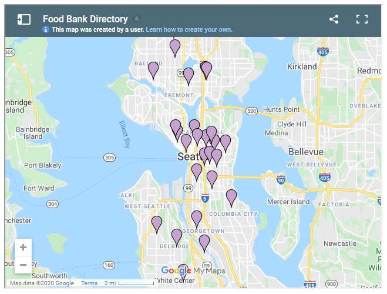

Why BreadLock?
Due to covid-19 the food banks around the country are overrun and can't keep up with the demand. However, with all the covid restrictions the gathering cuing outside of food banks put everyone at risk of catching covid. This app is aiming to help not only the general public but also the food banks aroudn this country. The key issues are:
-
Food Bbanks mostly operate on outdated software
-
Staff is mostly comprised of volunteers
-
Available software to track inventory can be expensive for license
US Food Waste Problems
In the United States, food waste is estimated at between 30-40 percent of the food supply. This estimate, based on estimates from USDA’s Economic Research Service of 31 percent food loss at the retail and consumer levels, corresponded to approximately 133 billion pounds and $161 billion worth of food in 2010. -USDA
Here is a chart showing how each food supply company is doing regarding the food waste:

US Food Insecurity
Another big issue in the US is the food insecurity caused by poverty and recently exacerbated by the pandemic. This following map shows a shocking food insecurity, particular among children:

Available Information
Given the food insecurty issues, there are multiple food banks around Seattle with a quick google search.
However the main issue is the system is not integrated and no simple way to find out where and what food bank is availabe. Here are 2 examples of different sites showing static information without live updates:


What is BreadLock?
Our main goal is to aid in our community through uniformity and connectivity while maintaing social distancing and provide the food bank information update live. This will help the customers plan their trip accordingly and avoiding long lines and running out of food supplies
Overall Wire Frame and User Flow Diagram
In the following user flow chart. The blue lines indicate the journey of customer, red lines indicate the admin flow and green lines inciate the map data being collected and listed for user to review.